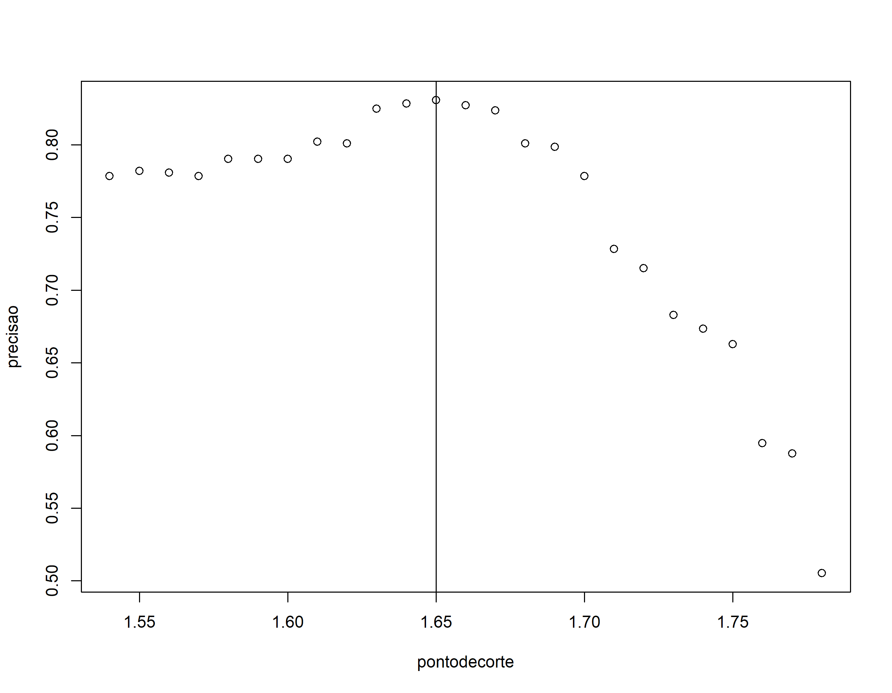
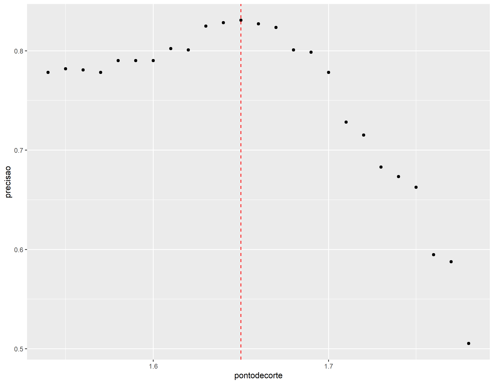
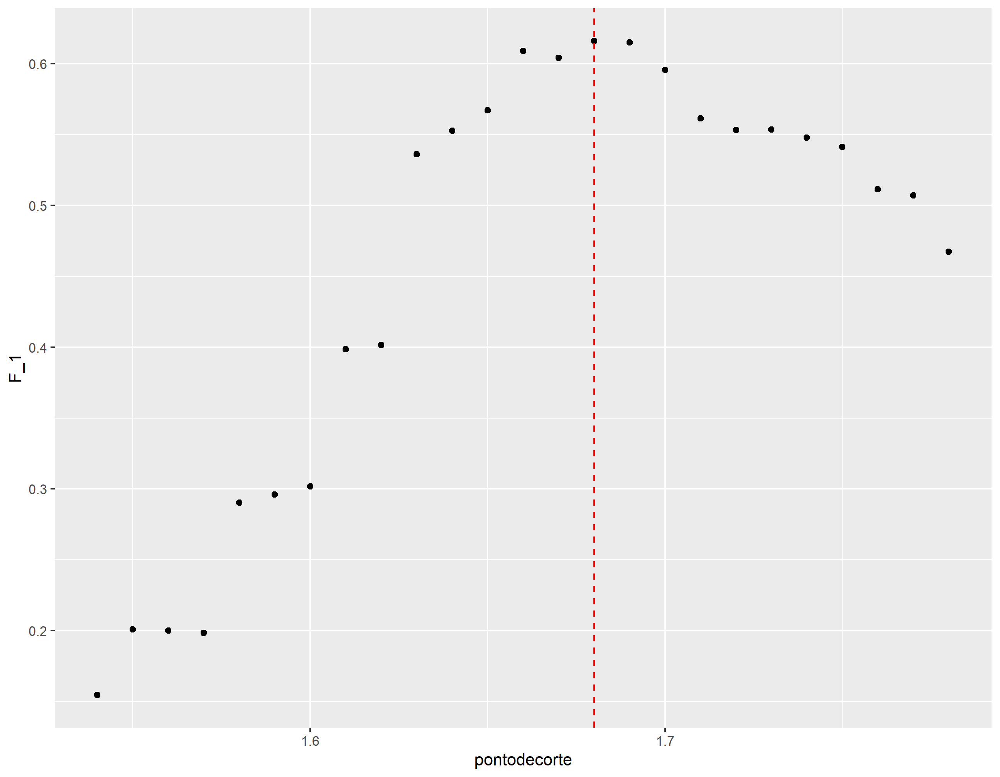
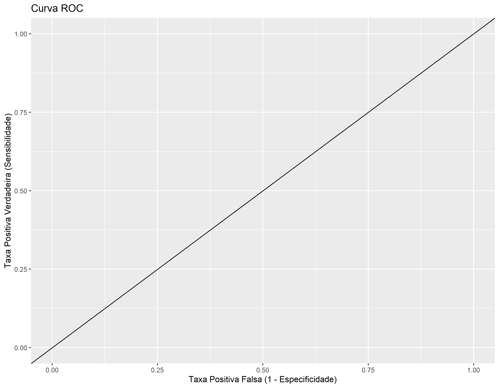
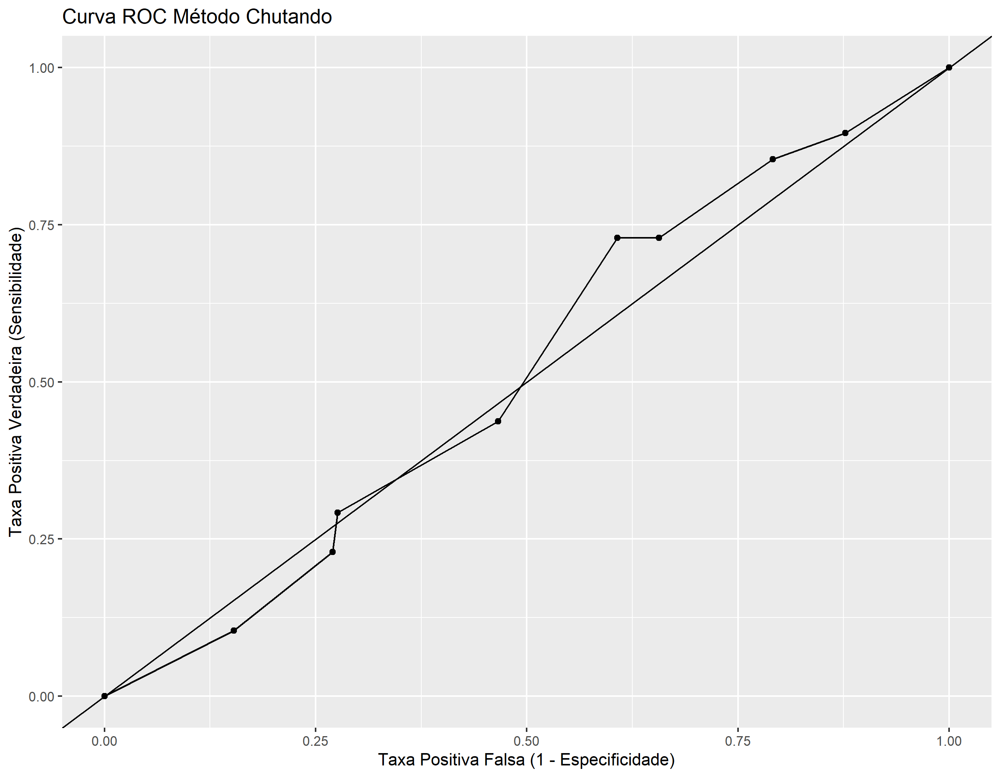
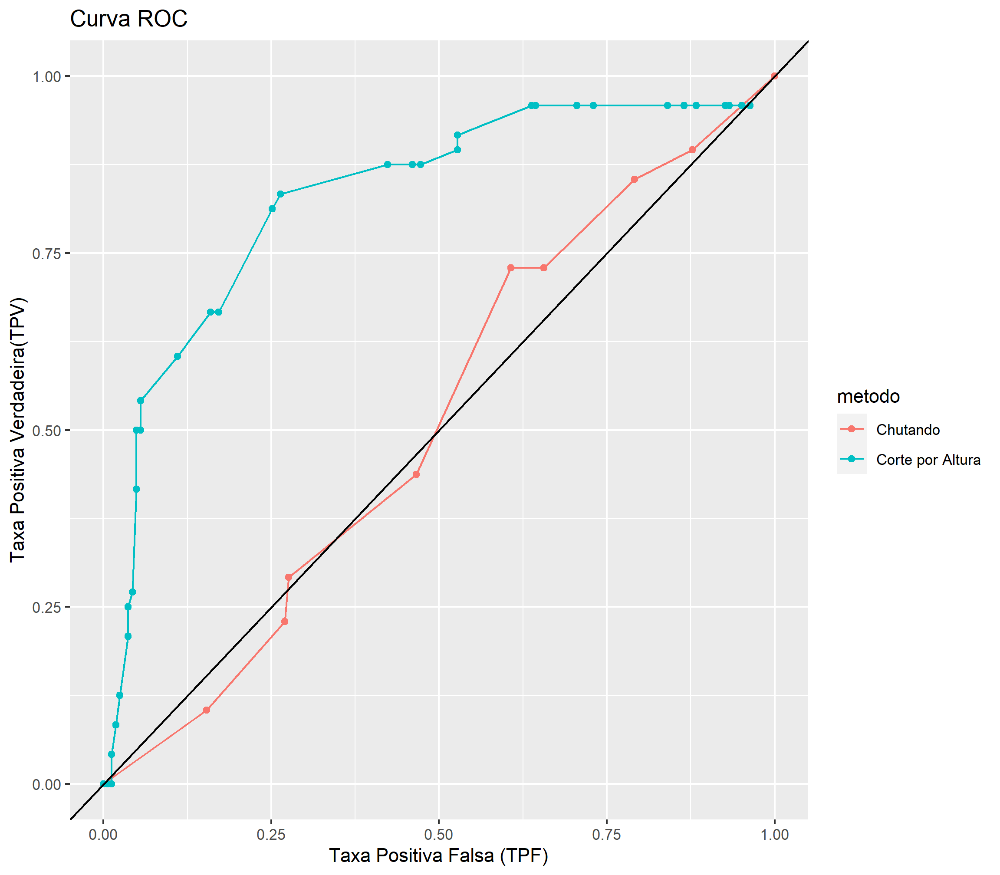
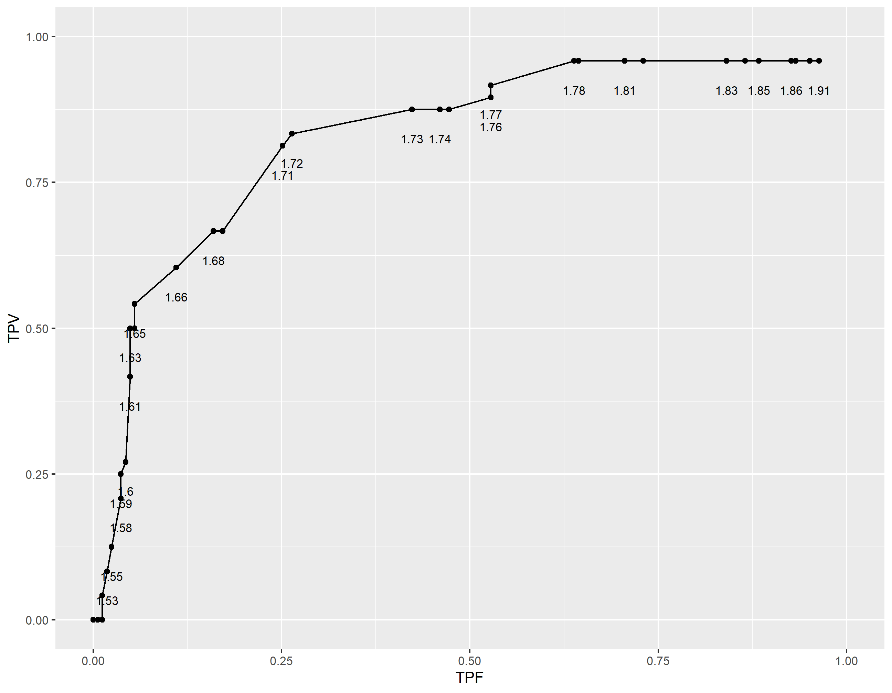
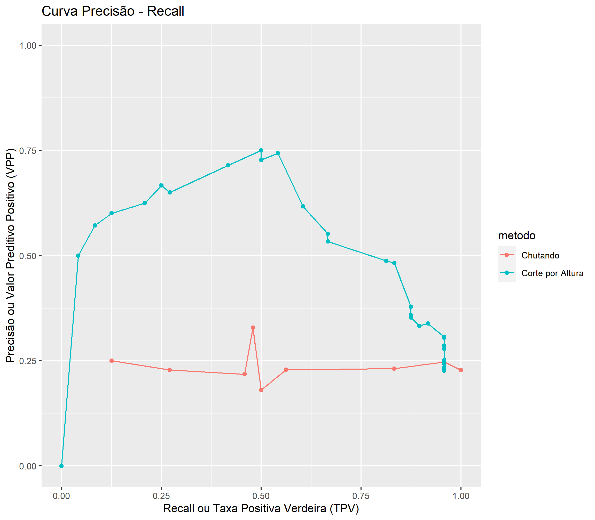

library(tidyverse)
library(caret)
library(dslabs)
data(heights)Classificação - Primeiros Passos
Primeiros Passos
Baseado no livro Introduction to Data Science: Data Analysis and Prediction Algorithms with R, Rafael A. Irizarry. (https://rafalab.github.io/dsbook/)
Carregando Bibliotecas
Traduzindo
head(heights) sex height
1 Male 75
2 Male 70
3 Male 68
4 Male 74
5 Male 61
6 Female 65str(heights)'data.frame': 1050 obs. of 2 variables:
$ sex : Factor w/ 2 levels "Female","Male": 2 2 2 2 2 1 1 1 1 2 ...
$ height: num 75 70 68 74 61 65 66 62 66 67 ...alturas <- heights %>%
# traduz dados para o português e transforma polegada para metro
mutate(
sex = case_when(
sex == "Male" ~ "Masculino",
sex == "Female" ~ "Feminino"
),
altura = height * 2.54 / 100 ) %>%
rename( sexo = sex) %>%
select(sexo , altura)
head(alturas) sexo altura
1 Masculino 1.9050
2 Masculino 1.7780
3 Masculino 1.7272
4 Masculino 1.8796
5 Masculino 1.5494
6 Feminino 1.6510str(alturas)'data.frame': 1050 obs. of 2 variables:
$ sexo : chr "Masculino" "Masculino" "Masculino" "Masculino" ...
$ altura: num 1.9 1.78 1.73 1.88 1.55 ...Alterando
alturas <- data.frame(sexo = factor(alturas$sexo), altura = alturas$altura)
str(alturas)'data.frame': 1050 obs. of 2 variables:
$ sexo : Factor w/ 2 levels "Feminino","Masculino": 2 2 2 2 2 1 1 1 1 2 ...
$ altura: num 1.9 1.78 1.73 1.88 1.55 ...head(alturas) sexo altura
1 Masculino 1.9050
2 Masculino 1.7780
3 Masculino 1.7272
4 Masculino 1.8796
5 Masculino 1.5494
6 Feminino 1.6510Definindo x e y
y <- alturas$sexo
x <- alturas$alturaTreino e Teste
set.seed(1234)
indice_teste <- createDataPartition(y, times = 1, p = 0.2, list = FALSE)
conj_teste <- alturas[indice_teste, ]
conj_treino <- alturas[-indice_teste, ]
head(conj_teste) sexo altura
4 Masculino 1.8796
7 Feminino 1.6764
9 Feminino 1.6764
14 Masculino 1.7272
16 Masculino 1.6764
25 Masculino 1.8288str(conj_teste)'data.frame': 211 obs. of 2 variables:
$ sexo : Factor w/ 2 levels "Feminino","Masculino": 2 1 1 2 2 2 2 2 2 2 ...
$ altura: num 1.88 1.68 1.68 1.73 1.68 ...summary(conj_teste) sexo altura
Feminino : 48 Min. :1.366
Masculino:163 1st Qu.:1.676
Median :1.727
Mean :1.735
3rd Qu.:1.803
Max. :2.032 head(conj_treino) sexo altura
1 Masculino 1.9050
2 Masculino 1.7780
3 Masculino 1.7272
5 Masculino 1.5494
6 Feminino 1.6510
8 Feminino 1.5748str(conj_treino)'data.frame': 839 obs. of 2 variables:
$ sexo : Factor w/ 2 levels "Feminino","Masculino": 2 2 2 2 1 1 2 2 2 2 ...
$ altura: num 1.9 1.78 1.73 1.55 1.65 ...summary(conj_treino) sexo altura
Feminino :190 Min. :1.270
Masculino:649 1st Qu.:1.676
Median :1.750
Mean :1.736
3rd Qu.:1.803
Max. :2.100 Chutar a resposta!!!!!
y_chapeu <- sample(c("Masculino", "Feminino"), length(indice_teste), replace = TRUE) %>%
factor(levels = levels(conj_teste$sexo))Calcula precisão
mean(y_chapeu == conj_teste$sexo)[1] 0.549763Melhorando
alturas %>% group_by(sexo) %>% summarize(mean(altura), sd(altura))# A tibble: 2 × 3
sexo `mean(altura)` `sd(altura)`
<fct> <dbl> <dbl>
1 Feminino 1.65 0.0955
2 Masculino 1.76 0.0917media_Homem <- mean(alturas[alturas$sexo=="Masculino",]$altura)
desv_pad_Homem <- sd(alturas[alturas$sexo=="Masculino",]$altura)
media_Homem[1] 1.760595desv_pad_Homem[1] 0.09172media_Homem - 2*desv_pad_Homem[1] 1.577155y_chapeu <- ifelse(x > media_Homem - 2*desv_pad_Homem , "Masculino", "Feminino") %>% factor(levels = levels(conj_teste$sexo))
mean(y == y_chapeu)[1] 0.7933333Qual o melhor ponto de corte?
pontodecorte <- seq(1.54, 1.78, by = 0.01)
precisao <- map_dbl(pontodecorte, function(x){
y_chapeu <- ifelse(conj_treino$altura > x, "Masculino", "Feminino") %>%
factor(levels = levels(conj_teste$sexo))
mean(y_chapeu == conj_treino$sexo)
})
max(precisao)[1] 0.8307509melhor_ponto <- pontodecorte[which.max(precisao)]
melhor_ponto[1] 1.65plot(pontodecorte, precisao)
abline(v=melhor_ponto)
y_chapeu <- ifelse(conj_teste$altura > melhor_ponto, "Masculino", "Feminino") %>%
factor(levels = levels(conj_teste$sexo))
y_chapeu <- factor(y_chapeu)
mean(y_chapeu == conj_teste$sexo)[1] 0.8530806Melhorando o gráfico
library(ggplot2)
dados <- data.frame(pontodecorte, precisao)
ggplot(data=dados, aes(x=pontodecorte, y=precisao)) + geom_point() +
geom_vline(xintercept = melhor_ponto, linetype="dashed", color="red")
Matriz de Confusão
table(previsto = y_chapeu, real = conj_teste$sexo) real
previsto Feminino Masculino
Feminino 26 9
Masculino 22 154conj_teste %>%
mutate(y_chapeu = y_chapeu) %>%
group_by(sexo) %>%
summarize(precisao = mean(y_chapeu == sexo))# A tibble: 2 × 2
sexo precisao
<fct> <dbl>
1 Feminino 0.542
2 Masculino 0.945confusionMatrix(data = y_chapeu, reference = conj_teste$sexo)Confusion Matrix and Statistics
Reference
Prediction Feminino Masculino
Feminino 26 9
Masculino 22 154
Accuracy : 0.8531
95% CI : (0.798, 0.8979)
No Information Rate : 0.7725
P-Value [Acc > NIR] : 0.002359
Kappa : 0.5378
Mcnemar's Test P-Value : 0.031141
Sensitivity : 0.5417
Specificity : 0.9448
Pos Pred Value : 0.7429
Neg Pred Value : 0.8750
Prevalence : 0.2275
Detection Rate : 0.1232
Detection Prevalence : 0.1659
Balanced Accuracy : 0.7432
'Positive' Class : Feminino
Maximizando a estatística F1
pontodecorte <- seq(1.54, 1.78, by = 0.01)
F_1 <- map_dbl(pontodecorte, function(x){
y_chapeu <- ifelse(conj_treino$altura > x, "Masculino", "Feminino") %>%
factor(levels = levels(conj_teste$sexo))
F_meas(data = y_chapeu, reference = factor(conj_treino$sexo))
})
max(F_1)[1] 0.616092melhor_ponto <- pontodecorte[which.max(F_1)]
melhor_ponto[1] 1.68dados <- data.frame(pontodecorte, F_1)
ggplot(data=dados, aes(x=pontodecorte, y=F_1)) + geom_point() +
geom_vline(xintercept = melhor_ponto, linetype="dashed", color="red")
y_chapeu <- ifelse(conj_teste$altura > melhor_ponto, "Masculino", "Feminino") %>%
factor(levels = levels(conj_teste$sexo))
confusionMatrix(data = y_chapeu, reference = conj_teste$sexo)Confusion Matrix and Statistics
Reference
Prediction Feminino Masculino
Feminino 32 26
Masculino 16 137
Accuracy : 0.8009
95% CI : (0.7406, 0.8526)
No Information Rate : 0.7725
P-Value [Acc > NIR] : 0.1839
Kappa : 0.4724
Mcnemar's Test P-Value : 0.1649
Sensitivity : 0.6667
Specificity : 0.8405
Pos Pred Value : 0.5517
Neg Pred Value : 0.8954
Prevalence : 0.2275
Detection Rate : 0.1517
Detection Prevalence : 0.2749
Balanced Accuracy : 0.7536
'Positive' Class : Feminino
Voltando a chutar
p <- 0.9
y_chapeu <- sample(c("Masculino", "Feminino"), length(indice_teste),
replace = TRUE, prob=c(p, 1-p)) %>% factor(levels = levels(conj_teste$sexo))
mean(y_chapeu == conj_teste$sexo)[1] 0.6919431Curva ROC
ggplot() +
geom_abline(intercept = 0, slope = 1.) +
labs(x = "Taxa Positiva Falsa (1 - Especificidade)",
y = "Taxa Positiva Verdadeira (Sensibilidade)",
title = "Curva ROC") +
scale_x_continuous(limits = c(0, 1.0)) +
scale_y_continuous(limits = c(0, 1.0))
Testando probabilidades
probs <- seq(0, 1, length.out = 10)
chutando <- map_df(probs, function(p){
y_chapeu <-
sample(c("Masculino", "Feminino"), length(indice_teste), replace = TRUE, prob=c(p, 1-p)) %>% factor(levels = levels(conj_teste$sexo))
list(metodo = "Chutando",
TPF = 1 - specificity(y_chapeu, conj_teste$sexo),
TPV = sensitivity(y_chapeu, conj_teste$sexo))
})
chutando %>%
ggplot(aes(TPF, TPV)) +
geom_line() +
geom_point() +
geom_abline(intercept = 0, slope = 1.) +
labs(x = "Taxa Positiva Falsa (1 - Especificidade)",
y = "Taxa Positiva Verdadeira (Sensibilidade)",
title = "Curva ROC Método Chutando") +
scale_x_continuous(limits = c(0, 1.0)) +
scale_y_continuous(limits = c(0, 1.0))
Comparando os dois métodos
pontodecorte <- seq(1.27 , 1.92, by = 0.01)
altura_ptdecorte <- map_df(pontodecorte, function(x){
y_chapeu <- ifelse(conj_teste$altura > x, "Masculino", "Feminino") %>%
factor(levels = levels(conj_teste$sexo))
list(metodo = "Corte por Altura",
TPF = 1 - specificity(y_chapeu, conj_teste$sexo),
TPV = sensitivity(y_chapeu, conj_teste$sexo))
})
bind_rows(chutando, altura_ptdecorte) %>%
ggplot(aes(TPF, TPV, color = metodo)) +
geom_line() +
geom_point() +
geom_abline(intercept = 0, slope = 1.) +
labs(x = "Taxa Positiva Falsa (TPF)",
y = "Taxa Positiva Verdadeira(TPV)",
title = "Curva ROC") +
scale_x_continuous(limits = c(0, 1.0)) +
scale_y_continuous(limits = c(0, 1.0))
Pontos da curva ROC
map_df(pontodecorte, function(x){
y_chapeu <- ifelse(conj_teste$altura > x, "Masculino", "Feminino") %>%
factor(levels = c("Masculino", "Feminino"))
list(metodo = "Corte por Altura",
corte = round(x, 2),
TPF = 1 - specificity(y_chapeu, conj_teste$sexo),
TPV = sensitivity(y_chapeu, conj_teste$sexo))
}) %>%
ggplot(aes(TPF, TPV, label = corte)) +
geom_line() +
geom_point() +
geom_text(nudge_y = - 0.05, size = 3, check_overlap = TRUE) +
scale_x_continuous(limits = c(0, 1.0)) +
scale_y_continuous(limits = c(0, 1.0))
Curva Precisão-Recall
chutando <- map_df(probs, function(p){
y_chapeu <- sample(c("Masculino", "Feminino"), length(indice_teste),
replace = TRUE, prob=c(p, 1-p)) %>%
factor(levels = c("Masculino", "Feminino"))
list(metodo = "Chutando",
recall = sensitivity(y_chapeu, conj_teste$sexo),
precisao = posPredValue(y_chapeu, conj_teste$sexo))
})
altura_ptdecorte <- map_df(pontodecorte, function(x){
y_chapeu <- ifelse(conj_teste$altura > x, "Masculino", "Feminino") %>%
factor(levels = c("Masculino", "Feminino"))
list(metodo = "Corte por Altura",
recall = sensitivity(y_chapeu, conj_teste$sexo),
precisao = posPredValue(y_chapeu, conj_teste$sexo))
})
bind_rows(chutando, altura_ptdecorte) %>%
ggplot(aes(recall, precisao, color = metodo)) +
geom_line() +
geom_point() +
labs(x = "Recall ou Taxa Positiva Verdeira (TPV)",
y = "Precisão ou Valor Preditivo Positivo (VPP)",
title = "Curva Precisão - Recall") +
scale_x_continuous(limits = c(0, 1.0)) +
scale_y_continuous(limits = c(0, 1.0))